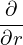
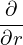

Consider the case that the boundary flux surface is circular with radius r = a and the center of the cirle at (R = R0,Z = 0). Consider the case 𝜀 = a∕R0 → 0. Expanding Ψ in the small parameter 𝜀,
|
| (578) |
where Ψ0 ∼ O(𝜀0), Ψ1 ∼ O(𝜀1). Substituting Eq. (578) into Eq. (577), we obtain
  r r + + r r + +  + +  − −  − −  = −μ0(R0+r cos𝜃)2P′(Ψ
0+Ψ1)−g′(Ψ0+Ψ1)g(Ψ0+Ψ1) = −μ0(R0+r cos𝜃)2P′(Ψ
0+Ψ1)−g′(Ψ0+Ψ1)g(Ψ0+Ψ1)
|
Multiplying the above equation by R02, we obtain
 | (579) |
Further assume the following ordering
 | (580) |
and
 | (581) |
Using these orderings, the order of the terms in Eq. (579) can be estimated as
 | (582) |
 | (583) |
 | (584) |
 | (585) |
 | (586) |
 | (587) |
 | (588) |
 | (589) |
 | (590) |
The leading order (𝜀−2 order) balance is given by the following equation:
 | (591) |
It is reasonable to assume that Ψ0 is independent of 𝜃 since Ψ0 corresponds to the limit a∕R → 0. (The limit a∕R → 0 can have two cases, one is r → 0, another is R →∞. In the former case, Ψ must be independent of 𝜃 since Ψ should be single-valued. The latter case corresponds to a cylinder, for which it is reasonable (really?) to assume that Ψ0 is independent of 𝜃.) Then Eq. (591) is written
 | (592) |
(My remarks: The leading order equation (592) does not corresponds strictly to a cylinder equilibrium because the magnetic field B = ∇Ψ0 ×∇ϕ + g∇ϕ depends on 𝜃.) The next order (𝜀−1 order) equation is
R02  r r +R02 +R02  −R0 −R0 cos𝜃 = −μ0R022R
0r cos𝜃P′(Ψ0)−μ0R04P′′(Ψ
0)Ψ1−R02[g′(Ψ
0)g(Ψ0)]′Ψ1 cos𝜃 = −μ0R022R
0r cos𝜃P′(Ψ0)−μ0R04P′′(Ψ
0)Ψ1−R02[g′(Ψ
0)g(Ψ0)]′Ψ1
|
![R21 ∂-r∂Ψ1-+R2 1-∂2Ψ1-+{μ R4P ′′(Ψ )+R2[g′(Ψ )g(Ψ )]′}Ψ = − μ R2 2R rcos𝜃P ′(Ψ )+R ∂Ψ0-cos𝜃
0r ∂r ∂r 0r2 ∂𝜃2 0 0 0 0 0 0 1 0 0 0 0 0 ∂r](tokamak_equilibrium776x.png) | (593) |
 | (594) |
It is obvious that the simple poloidal dependence of cos𝜃 will satisfy the above equation. Therefore, we consider Ψ1 of the form
 | (595) |
where Δ(r) is a new function to be determined. Substitute this into the Eq. (), we obtain an equation for Δ(r),
 | (596) |
 | (597) |
 | (598) |
![21 d ( dΨ0 dΔ) 2[ 1 d ( d2Ψ0) 1 dΨ0(r)] 2d2Ψ0 dΔ d 4 ′ 2 ′ 2 ′ dΨ0
R0r dr rdr--dr- +ΔR 0 rdr r-dr2- − r2 --dr-- +R 0dr2--dr + dr{μ0R0P (Ψ0)+R 0g(Ψ0)g(Ψ0)}Δ = − μ0R02R0rP (Ψ0)+R0-dr-](tokamak_equilibrium782x.png) | (599) |
Using the identity
 ![[ ( )]
1-d rdΨ0-
rdr dr](tokamak_equilibrium784x.png) = =    − −  , ,
|
equation () is written as
![1 d ( dΨ0 dΔ) d [1 d ( dΨ0 )] d2Ψ0 dΔ d dΨ0
R20r dr rdr--dr- +ΔR20dr rdr r-dr- +R20-dr2-dr-+ dr{μ0R40P′(Ψ0)+R20g′(Ψ0)g(Ψ0)}Δ = − μ0R202R0rP′(Ψ0)+R0 dr-](tokamak_equilibrium790x.png) | (600) |
Using the leading order equation (), we know that the second and fourth term on the l.h.s of the above equation cancel each other, giving
 | (601) |
 | (602) |
Using the identity
![[ ( )2 ] ( ) 2
1-dr--d r dΨ0- dΔ- = 1d- rdΨ0-dΔ- + dΨ0-dΔ-,
rdΨ0 dr dr dr rdr dr dr dr2 dr](tokamak_equilibrium793x.png) | (603) |
equation (602) is written
![[ ]
1-dr--d ( dΨ0)2 dΔ- ′ 1-dΨ0-
rdΨ0 dr r dr dr = − μ02R0rP (Ψ0)+ R0 dr ,](tokamak_equilibrium794x.png) | (604) |
![1 d [ (dΨ )2 dΔ] dP 1 ( dΨ )2
⇒ - -- r ---0 --- = − μ02R0r---+ --- --0- ,
rdr dr dr dr R0 dr](tokamak_equilibrium795x.png) | (605) |
Using
 | (606) |
equation (605) is written
![1 d [ dΔ ] 1 dP B2
- -- rB2𝜃0--- = − μ02--r---+ --𝜃0.
r dr dr R0 dr R0](tokamak_equilibrium797x.png) | (607) |
![d [ dΔ ] r ( dP(Ψ ) )
⇒ -- rB2𝜃0--- = --- − 2μ0r-----0-+ B2𝜃0 ,
dr dr R0 dr](tokamak_equilibrium798x.png) | (608) |
which agrees with equation (3.6.7) in Wessson’s book[26].